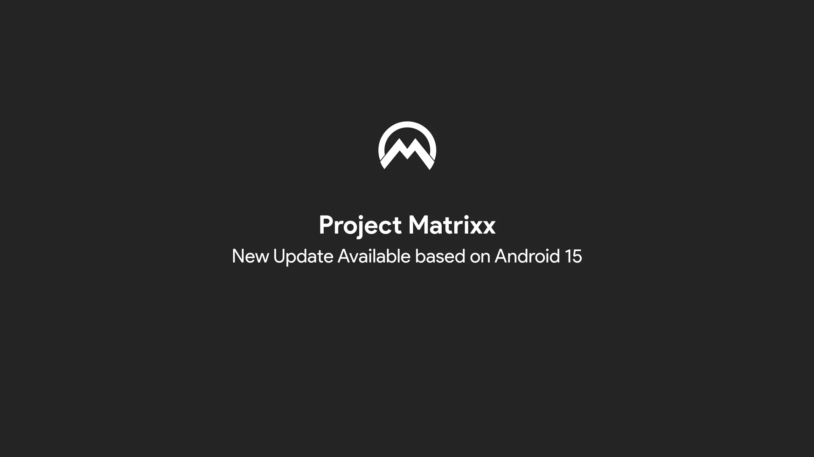

Redmi Note 11

Project Matrixx
Version 11.2.6 (23/03/2025)
- Add init.spes.rc
- Disable turbulence noise
- Introduce GameBar v2.0
- Move GameBar to system settings
- Add custom icon for GameBar on system settings
- Move NFC to global manifest
- Move to M3 switch for GameSpace 2.0
- Many more misc. changes
Version 11.2.6 (21/03/2025)
- Add front-facing camera protection
- Add support for modernized doze double/single tap to wake
- Drop legacy double-tap-to-wake config
- Drop MIUI Camera
- Drop old Android Go configurations
- Enable fts_gesture_mode
- Enable Bluetooth HAL to read MAC address from NV
- Enable Touch Gestures
- Handle DT2W feature through Xiaomi Touch
- Implement double/single tap attributes
- Implement support for multiple touch sensor paths
- Remove camera-daemon boost configs
- Remove unneeded NFC package
- Many more misc. changes
Version 11.2.5 (02/03/2025)
- Add WPA3 definition for SAE authentication
- Allow system_server to read fastcharge node
- Build QTI Thermal AIDL HAL
- Disable config_avoidGfxAccel overlay
- Enable force LTE_CA toggle overlay
- Fix video thumbnail bug
- Fix WPA3 Wi-Fi authentication
- Remove software C2 codec overrides
- Update reserved partition size
- Many more misc. changes
Version 11.2.0 (13/02/2025)
- Synced with the latest source
- Switched to the Murali kernel
- Added support for displaying battery info in settings
- Fixed battery drain issues
- Reduced ZRAM to 50%
- Enabled deep buffer for media by default
- Enabled WPA3/SAE
- Enabled smart pixels
- Reduced wakeup events to 100ms
- Disabled wakeup source creation
- Updated to Wakelock Blocker driver v1.1.0
- Reduced wakelock hold time to 1000ms
- Reduced timeout for uncongestion
- Reduced GC thread urgent sleep time to 50ms
- Disabled I/O stats accounting by default
- Reduced NTP wakeups
- Optimized file overwrites
- Applied branch optimization in free slowpath
- Many more misc. changes
Version 11.1.0 (02/02/2025)
- Initial A15 QPR1 Release